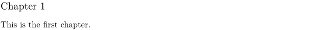

Contents
Summary
The command \ReadFile includes an external file
Settings
Description
The command
\ReadFile {filename}
is replaced by the content of the text file
filename
, if it exists. If it does not exist, no error message is generated and the compile process continues.
When no file extension is specified, the extension .tex is assumed.
Similar to the case with project structure commands such as \environment, \ReadFile causes ConTeXt to look in ancestor directories for the specified file.
Examples
Example 1
We have a chapter 1 file, but no chapter 2 file:
% chapter-01.tex \subject{Chapter 1} This is the first chapter.
The book file attempts to incorporate both chapters, using \ReadFile{filename}:
% complete-book.tex \starttext % No extension specified, so .tex assumed \ReadFile{chapter-01} \ReadFile{chapter-02} \stoptext
Compiling book.tex produces the following:
- 
No error message is generated for the missing chapter 2, and the compilation completes successfully.
Notes
See also
- file-res.mkvi
-
\input
Similar to
\ReadFilebut the filename is not specified as an argument. -
\readfile
Similar to
\ReadFilewith additional options when file is not found. - \getbuffer Get back the "formatted" content of a buffer.
- \typebuffer Get back the content of a buffer as verbatim text.
- \typefile Print a file verbatim
- \component for input command with more descriptive name.
- \environment for input command with more descriptive name.
- Text blocks/Dummy text for ways to produce filler text